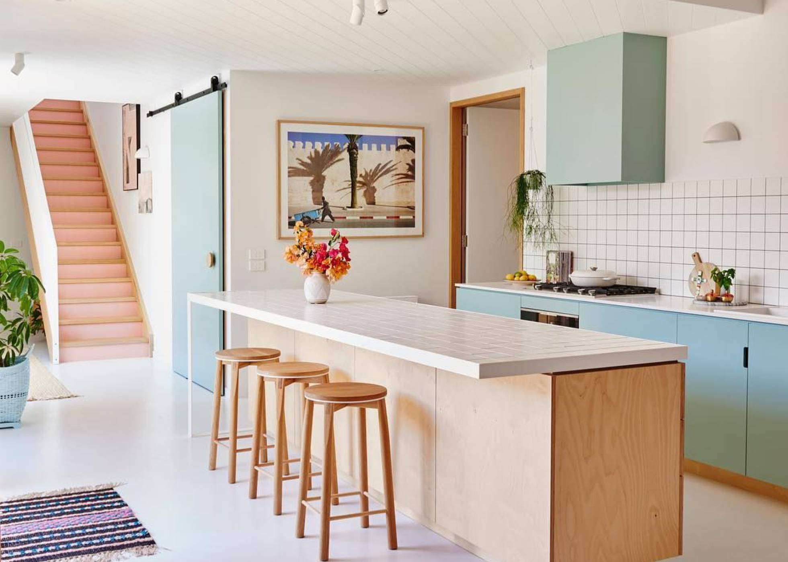

¿Que hago en cuarentena?
Todo es muy complicado mediante esta situcion del coronavirus, hemos tenido que casi siempre improvisar en todo, buscamos nuevas tacticas de entretenimiento, estudio, etc. pero en lo normal me distraigo viendo television, ayudando en la casa y jugando en el celular o cualquier otra cosa para tratar de no aburrirme sin salir, aparte de esto me ejercito para asi aprvechar y estar saludable durante esta cuarentena

¿Que puedes hacer en cuarentena?
La cocina como lugar de terapia. Tener las manos en la masa durante la cuarentena por el coronavirus (COVID–19), se está convirtiendo en una de las vías de escape más saludables. Según afirma un estudio realizado por la Universidad de Cambridge, cenar a diario en casa supone ingerir una media de 320 calorías menos (y hasta 16 gramos de azúcar) al día.